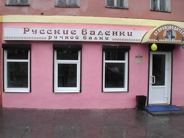
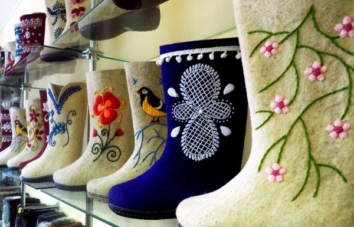
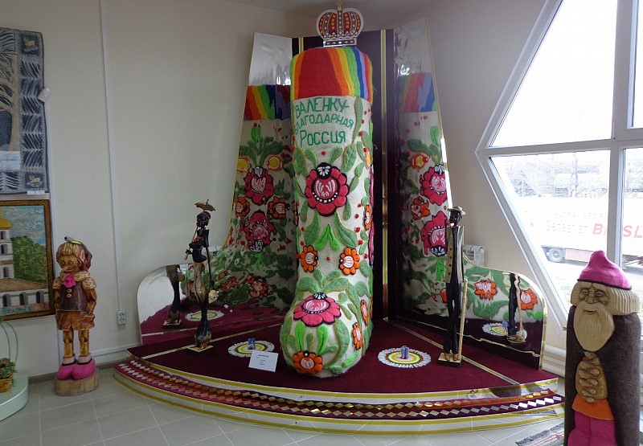
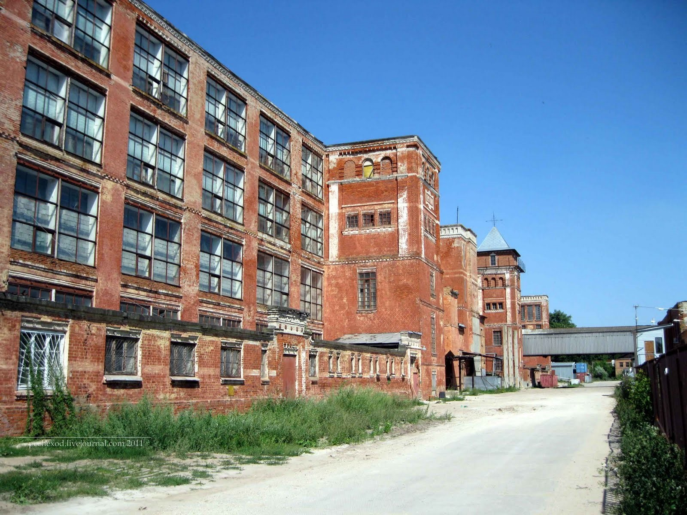
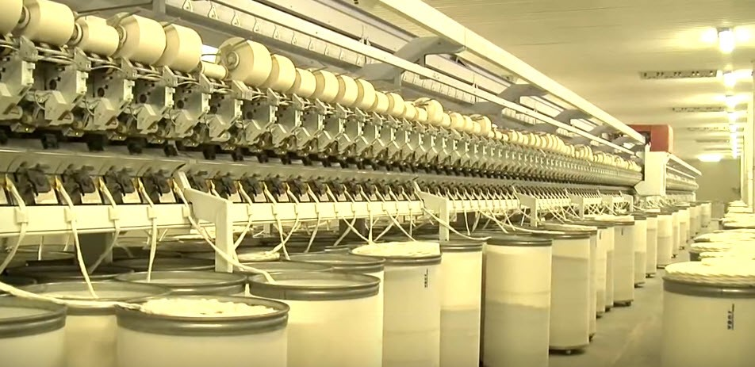
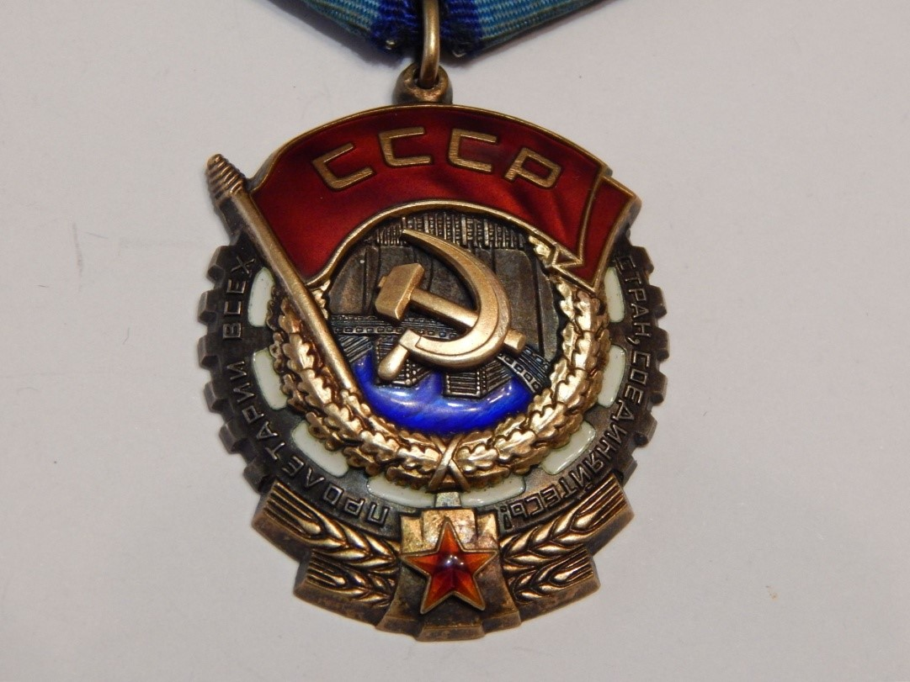

Волочек
Экономика
1.Комбинат «Парижская коммуна»
Старейший российский комбинат по производству трикотажных полотен. Вот уже более 150 лет предприятие производит высококачественные трикотажные ткани из хлопчатобумажной, синтетической и комбинированной нити, а также выполняет пошив готовых изделий для широкого круга покупателей. Ассортимент выпускаемой продукции огромен и разнообразен.
За годы своей деятельности Вышневолоцкий комбинат заслужил массу наград и достижений.
2.Предприятие « Русские валенки ручной валки»


В декабре 1992 года фабрика по химчистке и покраске одежды была выкуплена предпринимателем Борисом Смородовым. В первую очередь определили, что обувь необходимо делать вручную, и она должна быть удобной. Восемь лет учились делать настоящие валенки по старой "рецептуре". Все операции рабочие выполняют собственными руками, никакой химии, кроме шерсти и воды, здесь быть не может. Отличить валенки машинной валки от тех, что делаются вручную, очень просто. Первые - толстые и твёрдые как дерево, а вторые - мягкие, лёгкие и при сгибе легко выпрямляются. Разнообразить внешний вид валенок помогают швеи — они украшают валенки как традиционными русскими орнаментами, так и современными узорами, а также стилизуют обувь под различных животных. Кроме того, к валенкам, можно пришить подошву из современных материалов или надеть на них калоши — тогда они превращаются в настоящие вездеходы, которым не страшна грязь, соль на тротуарах, гололед и морозы. Сейчас достигли такого уровня, что можно смело сказать: вышневолоцкие валенки – одни из лучших в мире. Ассортимент выпускаемой продукции постоянно обновляется. В конце 2015 года приступили к выпуску тапок (без швов), изготовленных способом валяния. В 2018 г. приступили к выпуску зимних ботинок на змейке и со шнуровкой на подошве . В ноябре 2012 года на базе фабрики «Валенки ручной валки» был открыт музей «Русские валенки» Музей рассказывает историю создания валенок, повествует о традициях создания этой обуви, современных технологиях изготовления и их сегодняшнем месте в быту. Интерьер музея составляют подлинные экспонаты прошлого: шлифовальный, точильный, чёсальный станки, применяемый в кустарном производстве; многочисленные колодки, биты, рубила и другие атрибуты, необходимые для процесса изготовления валенок. Увидеть, как создаются валенки, можно в специальном фильме. В экспозиции музея есть русская печь, декоративные лавочки в виде котов, много расписных и декоративных валенок, забавных сувениров, рабочих стеллажей с предметами быта и инструментами. Главным экспонатом и гордостью музея является «Царь-валенок» 201-го размера (225 см высотой и весом 52 кг) — претендент на попадание в Книгу рекордов Гиннеса. На валенке-богатыре красуется надпись: «Валенку — благодарная Россия».

3.Хлопчатобумажный комбинат


ООО «Вышневолоцкий хлопчатобумажный комбинат одно из крупнейших текстильных предприятий России с богатейшей 150-летней историей, входит в число 10 крупнейших текстильных производств России. Комбинат представляет собой предприятие с полным законченным технологичным циклом производства готовой продукции и включает в себя прядильную, ткацкую, отделочную и швейную фабрики. В конце 2008 года успешно введена в эксплуатацию новая прядильная фабрика с новейшим оборудованием фирм TRUTZSCHLER (Германия) и SCHLAFHORST (Германия). Предприятие занимается производством качественных, экологически чистых, приятных на ощупь текстильных изделий, а также тканей и пряжи. Ассортимент представлен следующими видами готовой продукции: полотенце с логотипом, рисунком и пр. элементами, халаты, салфетки, банные наборы, мужские и женские комплекты для сауны, коврики для ног, комплекты для кухни. Вся продукция отвечает высочайшему качеству и обладает превосходными эксплуатационными характеристиками.

В 1957 году, в связи с большим вкладом в развитие текстильной промышленности и 100-летием со дня основания, вышневолоцкий хлопчатобумажный комбинат награждён Орденом Трудового Красного Знамени.

4.ЗАО швейная фабрика «Аэлита»
Швейная фабрика «Аэлита» работает с ноября 2002 года, считается малым предприятием с численностью 77 человек. Предприятие специализируется по пошиву верхних сорочек для мужчин и мальчиков всех возрастов, жилетов и брюк для мальчиков. Также фабрика производит платья для девочек; швейные изделия из джинсовых тканей; трикотаж для детей: футболки, пижамы, топики, майки; постельное белье; рабочую одежду. Фабрика выполняет спецзаказы по пошиву форменных сорочек для силовых структур, спецодежду для медицинского персонала. Продукция под торговой маркой "Аэлита" изготавливается из современных высококачественных тканей разнообразной фактуры и цветовой гаммы, современных клеевых материалов, ниток и фурнитуры.